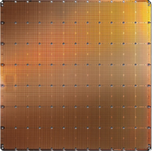
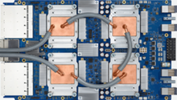
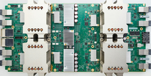
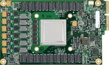
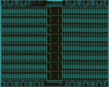
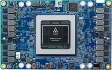
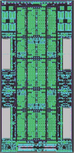
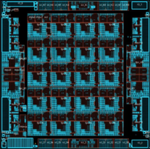
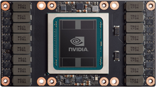
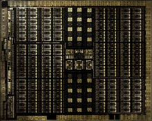

This note summarises details of some of the new silicon chips for machine intelligence. Its aim is to distil the most important implementation and architectural details (at least that are currently available), to highlight the main differences between them. I’m focusing on chips designed for training since they represent the frontier in performance and capability. There are many chips designed for inference, but these are typically intended for use in embedded or edge deployments.
In summary:
| Chip | Process | Die size mm2 |
TDP (W) |
On-chip RAM (MB) |
Peak FP32 (TFLOPs) |
Peak FP16 (TFLOPs) |
Mem b/w (GB/s) |
IO b/w (GB/s) |
|---|---|---|---|---|---|---|---|---|
| Cerebras WSE† | TSMC 16nm | 510 | 180 | 225 | 40.6 | n/a | 0 | Unknown |
| Google TPU v1 | 28nm | Unknown | 75 | 28 | n/a | 23 (INT16) | 30 (DDR3) | 14 |
| Google TPU v2 | 20nm* | Unknown | 200* | Unknown | Unknown | 45 | 600 (HBM) | 8* |
| Google TPU v3 | 16/12nm* | Unknown | 200* | Unknown | Unknown | 90 | 1200 (HBM2)* | 8* |
| Graphcore IPU | 16nm | 800* | 150 | 300 | Unknown | 125 | 0 | 384 |
| Habana Gaudi | TSMC 16nm | 500* | 300 | Unknown | Unknown | Unknown | 1000 (HBM2) | 250 |
| Huawei Ascend 910 | 7nm+ EUV | 456 | 350 | 64 | Unknown | 256 | 1200 (HBM2) | 115 |
| Intel NNP-T | TSMC 16FF+ | 688 | 250 | 60 | Unknown | 110 | 1220 (HBM2) | 447 |
| Nvidia Volta | TSMC 12nm FFN | 815 | 300 | 21.1 | 15.7 | 125 | 900 (HBM2) | 300 |
| Nvidia Turing | TSMC 12nm FFN | 754 | 250 | 24.6 | 16.3 | 130.5 | 672 (HBM2) | 100 |
Cerebras Wafer-Scale Engine

The Cerebras Wafer-Scale Engine (WSE) is undoubtedly the most bold and innovative design to appear recently. Wafer-scale integration is not a new idea, but integration issues to do with yield, power delivery and thermal expansion have made it difficult to commercialise (see the 1989 Anamartic 160 MB solid state disk). Cerebras use this approach to integrate 84 chips with high-speed interconnect, uniformly scaling the 2D-mesh based interconnect to huge proportions. This provides a machine with a large amount of memory (18 GB) distributed among a large amount of compute (3.3 Peta FLOPs peak). It is unclear how this architecture scales beyond single WSEs; the current trend in neural nets is to larger networks with billions of weights, which will necessitate such scaling.
General details:
- Announced August 2019.
- 46,225 mm2 wafer-scale integrated system (215 mm x 215 mm) om TSMC 16 nm.
- 1.2T transistors.
- Many individual chips: a total of 84 (12 wide by 7 tall).
- 18 GB total of SRAM memory, distributed among cores.
- 426,384 simple compute cores.
- Silicon defects can be repaired by using redundant cores and links to bypass a faulty area. It appears that each column includes one redundant core, leaving 410,592 functional cores.
- Speculated clock speed of ~1 GHz and 15 kW power consumption.
Interconnect and IO:
- Interconnections between chips, across scribe lines, with wiring added in post-processing steps after conventional wafer manufacturing.
- IOs brought out on east and west edges of wafer, which is limited by the pad density on each edge. It is unlikely there are any high-speed SerDes since these would need to be integrated in every chip, making a sizeable part of the wafer area redundant apart from chips with edges on the periphery.
- 2D mesh-based interconnect, supports single-word messages. According to their whitepaper: “The Cerebras software configures all the cores on the WSE to support the precise communication required” indicating that the interconnect is statically configured to support a fixed communication pattern.
- Interconnect requires static configuration to support specific patterns of communication.
- Zeros not transmitted on the interconnect to optimise for sparsity.
Each core:
- Is ~0.1 mm2 of silicon.
- Has 47 kB SRAM memory.
- Zeros not loaded from memory and zeros not multiplied.
- Assumed FP32 precision and scalar execution (can’t filter zeros from memory with SIMD).
- FMAC datapath (peak 8 operations per cycle).
- Tensor control unit to feed the FMAC datapath with strided accesses from memory or inbound data from links.
- Has four 8 GB/s bidirectional links to its neighbours.
Each die:
- Is 17 mm x 30 mm = 510 mm2 of silicon.
- Has 225 MB SRAM memory.
- Has 54 x 94 = 5,076 cores (two cores per row/column possibly unused due to repair scheme leaving 4,888 usable cores).
- Peak FP32 performance of 40 Tera FLOPs.
References:
- AnandTech report from HC31, August 2019
- Cerebras white paper, August 2019 (no longer available)
- Cerebras Wafer Scale Engine: Why we need big chips for Deep Learning
Google TPU v3

With few details available on the specifications of the TPU v3, it is likely an incremental improvement to the TPU v2: doubling the performance, adding HBM2 memory to double the capacity and bandwidth.
General details (per chip):
- Announced May 2018.
- Likely to be 16nm or 12nm.
- 200W estimated TDP.
- 105 TFLOPs of BFloat16, likely from doubling the MXUs to four.
- Each MXU has dedicated access to 8 GB of memory.
- Integrated in four-chip modules (pictured), 420 TFLOPs peak performance.
IO:
- 32 GB HBM2 integrated memory with access bandwidth of 1200 GBps (assumed).
- PCIe-3 x8 assumed at 8 GBps.
References:
Google TPU v2

The TPU v2 is designed for training and inference. It improves over the TPU v1 with floating point arithmetic and enhanced memory capacity and bandwidth with HBM integrated memory.
General details (per chip):
- Announced May 2017.
- Likely to be 20nm.
- 200-250W estimated TDP.
- 45 TFLOPs of BFloat16.
- Two cores with scalar and matrix units.
- Also supports FP32.
- Integrated in four-chip modules (pictured), 180 TFLOPs peak performance.
Each core:
- 128x128x32b systolic matrix unit (MXU) with BFloat16 multiplication and FP32 accumulation.
- 8GB of dedicated HBM with access bandwidth of 300 GBps.
- Peak throughput of 22.5 TFLOPs of BFloat16.
IO:
- 16 GB HBM integrated memory at 600 GBps bandwidth (assumed).
- PCIe-3 x8 (8 GBps).
References:
- NextPlatform Under The Hood Of Google’s TPU2 Machine Learning Clusters, May 2017
- Tom’s Hardware: Hot Chips 2017: A Closer Look At Google’s TPU v2, September 2017
Google TPU v1

Google’s first generation TPU was designed for inference only and supports only integer arithmetic. It provides acceleration to a host CPU by being sent instructions across PCIe-3, to perform matrix multiplications and apply activation functions. This is a significant simplification which would have saved much time in design and verification.
General details:
- Announced in 2016.
- 331 mm2 die on 28nm process.
- Clocked at 700 MHz and 28-40W TDP.
- 28 MB on-chip SRAM memory: 24 MB for activations and 4 MB for accumulators.
- Proportions of the die area: 35% memory, 24% matrix multiply unit, 41% remaining area for logic.
- 256x256x8b systolic matrix multiply unit (64K MACs/cycle).
- INT8 and INT16 arithmetic (peak 92 and 23 TOPs/s respectively).
IO:
- 8 GB DDR3-2133 DRAM accessible via two ports at 34 GB/s.
- PCIe-3 x 16 (14 GBps).
References:
- Wikipedia: Tensor Processing Unit
- TPU v1 paper (In-Datacenter Performance Analysis of a Tensor Processing Unit), April 2017
Graphcore IPU

DISCLAIMER: I work at Graphcore, and all of the information given here is lifted directly from the linked references below.
The Graphcore IPU architecture is highly parallel with a large collection of simple processors with small memories, connected by a high-bandwidth all-to-all ‘exchange’ interconnect. The architecture operates under a bulk-synchronous parallel (BSP) model, whereby execution of a program proceeds as a sequence of compute and exchange phases. Synchronisation is used to ensure all processes are ready to start exchange. The BSP model is a powerful programming abstraction because it precludes concurrency hazards, and BSP execution allows the compute and exchange phases to make full use of the chip’s power resources. Larger systems of IPU chips can be built by connecting the 10 inter-IPU links.
General details:
- 16 nm, 23.6 bn transistors, ~800mm2 die size.
- 1216 processor tiles.
- 125 TFLOPs peak FP16 arithmetic with FP32 accumulation.
- 300 MB total on-chip memory, distributed among processor cores, providing an aggregate access bandwidth of 45 TBps.
- All model state held on chip, there is no directly-attached DRAM.
- 150 W TDP (300 W PCIe card).
IO:
- 2x PCIe-4 host IO links.
- 10x inter-card ‘IPU links’.
- Total of 384 GBps IO bandwidth.
Each core:
- Mixed-precision floating-point stochastic arithmetic.
- Runs up to six program threads.
References:
- RAAIS presentation, July 2017
- NIPS presentation, November 2017
- ScaledML presentation, March 2018
- EETimes: Graphcore CEO Touts ‘Most Complex Processor’ Ever, April 2019
- Serve the Home overview of the C2 card, June 2019
- WikiChip: Colossus microarchitecture
Habana Labs Gaudi

Habana’s Gaudi AI training processor shares similarities with contemporary GPUs, particularly wide SIMD parallelism and HBM2 memory. The chip integrates ten 100G Ethernet links which support remote direct memory access (RDMA). This IO capability allows large systems to be built with commodity networking equipment, compared with Nvidia’s NVLink or OpenCAPI.
General details:
- Announced June 2019.
- TSMC 16 nm with CoWoS, assumed die size ~500mm2.
- Heterogeneous architecture with:
- a GEMM operations engine;
- 8 Tensor Processing Cores (TPCs);
- a shared SRAM memory (software managed and accessible via RDMA).
- 200W TDP for PCIe card and 300W TDP for the mezzanine card.
- Unknown total on-chip memory.
- Explicit memory management between chips (no coherency).
TPC core:
- VLIW SIMD parallelism and a local SRAM memory.
- Mixed precision: FP32, BF16, plus integer formats (INT32, INT16, INT8, UINT32, UINT8).
- Random number generation.
- Transcendental functions: Sigmoid, Tanh, Gaussian error linear unit (GeLU).
- Tensor addressing and strided access.
- Unknown local memory per TPC.
IO:
- 4x HBM2-2000 DRAM stacks providing 32 GB at 1 TBps.
- 10x 100GbE interfaces are integrated on-chip, supporting RDMA over Converged Ethernet (RoCE v2).
- IOs are implemented with 20x 56 Gbps PAM4 Tx/Rx SerDes and can also be configured as 20x 50 GbE. This allows up to 64 chips to be connected with non-blocking throughput.
- PCIe-4 x16 host interface.
References:
- The Next Platform: AI Chip Startup Releases Training Accelerator to Challenge GPUs, June 2019
- AnandTech report from HC31, August 2019
- Habana Labs Gaudi whitepaper, August 2019
Huawei Ascend 910

Huawei’s Ascend also bears similarities to the latest GPUs with wide SIMD arithmetic and a 3D matrix unit, comparable to Nvidia’s Tensor Cores, a (assumed) coherent 32 MB shared L2 on-chip cache. The chip includes additional logic for 128 channel video decoding engines for H.264/265. In their Hot Chips presentation, Huawei described overlapping the cube and vector operations to obtain high efficiency and the challenge of the memory hierarchy with ratio of bandwidth to throughput dropping by 10x for L1 cache (in the core), 100x for L2 cache (shared between cores), and 2000x for external DRAM.
General details:
- Announced August 2019.
- 456 mm2 logic die on a 7+ nm EUV process.
- Copackaged with four 96 mm2 HBM2 stacks and ‘Nimbus’ IO processor chip.
- 32 DaVinci cores.
- Peak 256 TFLOPs (32 x 4096 x 2) FP16 performance, double that for INT8.
- 32 MB shared on-chip SRAM (L2 cache).
- 350W TDP.
Interconnect and IO:
- Cores interconnected in a 6 x 4 2D mesh packet-switched network, providing 128 GBps bidirectional bandwidth per core.
- 4 TBps access to L2 cache.
- 1.2 TBps HBM2 access bandwidth.
- 3x 30 GBps inter-chip IOs.
- 2x 25 GBps RoCE networking interfaces.
Each DaVinci core:
- 3D 16x16x16 matrix multiply unit providing 4,096 FP16 MACs and 8,192 INT8 MACs.
- 2,048 bit SIMD vector operations for FP32 (x64), FP16 (x128) and INT8 (x256).
- Support for scalar operations.
References:
Intel NNP-T

This chip is Intel’s second attempt at an accelerator for machine learning, following the Xeon Phi. Like the Habana Gaudi chip, it integrates a small number of wide vector cores, with HBM2 integrated memory and similar 100 Gbit IO links.
General details:
- 27 bn transistors.
- 688 mm2 die on TSMC 16FF+ TSMC with CoWoS.
- 32 GB HBM2-2400 in four 8 GB stacks integrated on a 1200 mm2 passive silicon interposer.
- 60 MB on-chip SRAM memory distributed among cores and ECC protected.
- Up to 1.1 GHz core clock.
- 150-250W TDP.
- 24 Tensor Processing Cluster (TCP) cores.
- TPCs connected in a 2D mesh network topology.
- Separate networks for different types of data: control, memory and inter-chip communication.
- Support for multicast.
- 119 TOPs peak performance.
IO:
- 1.22 TBps HBM2 bandwidth.
- 64 lanes of SerDes with peak 3.58 Tbps aggregate bandwidth (28 Gbps each direction in each lane) for inter-chip IOs.
- x16 PCIe-4 host interface (also supports OAM, Open Compute).
TPC core:
- 2x 32x32 BFloat16 multiplier arrays supporting FMAC operation with FP32 accumulation.
- Vector FP32 and BFloat16 operations.
- Support for transcendental functions, random number generation, reductions and accumulations.
- Programmable FP32 lookup tables.
- A separate convolution engine for non-MAC compute.
- 2.5 MB two-port private memory with 1.4 TBps read/write bandwidth.
- Memory supports tensor transpose operation.
- Communication interface supporting dynamic packet routing on the mesh (virtual channel, reliable transmission).
Scaling:
- Up to 1024 chips with direct interconnections, providing the same distributed-memory programming model (explicit memory management, synchronisation primitives, message passing).
- Scaling demonstrated up to 32 chips connected in a ring topology.
References:
- WikiChip: Intel’s Spring Crest NNP-L Initial Details, April 2019
- Tom’s Hardware, August 2019
- Intel’s HC31 presentation (PDF), August 2019
- AnandTech report from HC31, August 2019
Nvidia Volta

Volta introduces Tensor Cores, HBM2 and NVLink 2.0, from the Pascal architecture.
General details:
- Announced May 2017.
- 815 mm2 on TSMC 12nm FFN, 21.1 bn transistors.
- 300 W TDP (SXM2 form factor).
- 6 MB L2 cache.
- 84 SMs, each containing: 64 FP32 CUDA cores, 32 FP64 CUDA cores and 8 Tensor Cores (5376 FP32 cores, 2688 FP64 cores, 672 TCs).
- Tensor Cores perform 4x4 FMA, achieving 64 FMA ops/cycle, and 128 FLOPs.
- 128 KB L1 data cache/shared memory and four 16K 32-bit registers per SM.
IO:
- 32 GB HBM2 DRAM, at 900 GBps bandwidth.
- NVLink 2.0 at 300 GBps.
References:
- Wikipedia: Volta (microarchitecture)
- Volta architecture whitepaper
- Nvidia Tesla V100 datasheet
- AnandTech - NVIDIA Volta Unveiled: GV100 GPU and Tesla V100 Accelerator Announced, May 2017
Nvidia Turing

Turing is an architectural revision of Volta, manufactured on the same 16 nm process, but with fewer CUDA and Tensor cores. It consequently has a smaller die size and lower power envelope. Apart from ML tasks, it is designed to perform real-time ray tracing, for which it also used the Tensor Cores.
General details:
- Announced September 2018.
- TSMC 12nm FFN, 754 mm2 die, 18.6 bn transistors.
- 260 W TDP.
- 72 SMs, each containing: 64 FP32 cores, and 64 INT32 cores, 8 Tensor cores (4608 FP32 cores, 4608 INT32 cores and 576 TCs).
- Peak performance with boost clock: 16.3 TFLOPs FP32, 130.5 TFLOPs FP16, 261 TFLOPs INT8, 522 TFLOPs INT4.
- 24.5 MB on-chip memory between 6 MB L2 cache and 256 KB SM register files.
- 1455 MHz base clock.
IO:
- 12x 32-bit GDDR6 memory providing 672 GBps aggregate bandwidth.
- 2x NVLink x8 links, each providing up to 26 GBps bidirectional.
References:
- Wikipedia: Turing (mircoarchitecture)
- AnandTech: NVIDIA Reveals Next-Gen Turing GPU Architecture, August 2018
- Nvidia Turing GPU architecture whitepaper (PDF)
Further reading
- AI Chip - A list of ICs and IPs for AI, Machine Learning and Deep Learning (GitHub)
- MLPerf Training v0.6 results (TPU v3 and Volta only)
See this thread on Hacker News for discussion of this note.